Question. When a question is missing information, do models ask, or guess? And if they guess, can the user tell?
Design. Registered on OSF before any response was scored (10.17605/OSF.IO/CS967). Five open-weight models from four organisations (Gemma 3 27B, Gemma 4 31B, gpt-oss-120b, Qwen3-Next-80B-A3B, Nemotron 3 Super) at temperature 0. 142 factual questions, each in a fully specified form and with its key referent removed (same answer key), plus three identity probes. 5,620 responses scored blind by two raters (κ = 0.853 for correctness, 1.00 for verbal uncertainty).

| Finding | Number |
|---|---|
| Referent removed: models ask for clarification | 33.7% of prompts |
| Error among attempted answers, intact → referent removed | 39.1% → 52.0% (mixed-effects OR 4.12, 95% CI 2.76–6.14) |
| Wrong answers that carry no hedge | 75.3% |
| How well hedging separates right from wrong (0.5 = chance) | AUROC 0.56 |
| Same 50 questions, the user claims an identity | mean answer length 188 words (anonymous) vs 259–268 (patient, physician, researcher) |
IMPORTANT When information is missing, models usually guess, and the wording barely changes. Hedging is not a usable warning sign. Evaluations should score clarification as a good outcome rather than read confidence from tone.
Scope. All three studies measure behaviour through sampling, so the claims concern what each component does, not the internal circuit that does it. These are instruction-tuned models served through APIs.
Files
| Folder | Contents |
|---|---|
data/prompts/ |
Prompt set and question sources |
data/probes/ |
Pronoun, authority and safety probes |
data/raw_outputs/ |
Every model response |
data/scoring/ |
Both raters' scoring sheets, the blind key and the 600-response overlap list |
docs/ |
Pre-registration, scoring rubric, prompt taxonomy |
code/ |
Sampling, collection, agreement and analysis scripts |
results/ |
Inter-rater agreement report |
Two sets of figures, one conclusion
The scoring sheets carry the original correctness labels, and
code/run_analysis.py reproduces the figures they support:
error 39.9% (intact) and 66.7% (referent removed), and 77.4% of wrong
answers unhedged. The thesis reports those as a robustness check. The
headline figures above (39.1% and 52.0%, 75.3% unhedged, AUROC 0.56)
come from the final registered analysis, which treats a pure
clarification request as an abstention rather than an error, as the
rubric specifies, after a label-validity check of all 468 replies
containing clarification or refusal language. Both versions lead to the
same conclusion.
Reproduce
PowerShell, inside
evidence\study_C_confidence_and_identity, no GPU or API
needed:
py -m pip install -r requirements.txt; py code\compute_kappa.py; py code\run_analysis.pyThe last lines list each registered hypothesis with its adjusted
p-value (for example
H1_clarity adj_p=2.4e-23 significant).
Study A · The Attention Ablation Test · Study B · Commitment repair · Study C · Confidence and identity · Verification · Thesis PDF
Source, data and code: github.com/RejaulKorimSadi/MRI-of-a-Mad-Machine